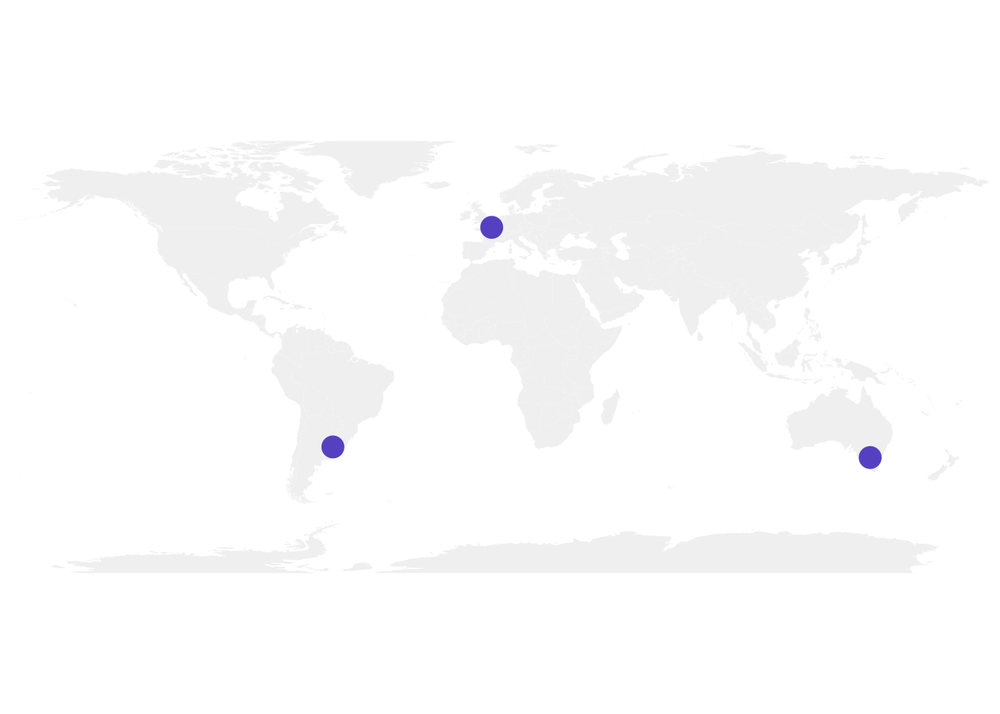
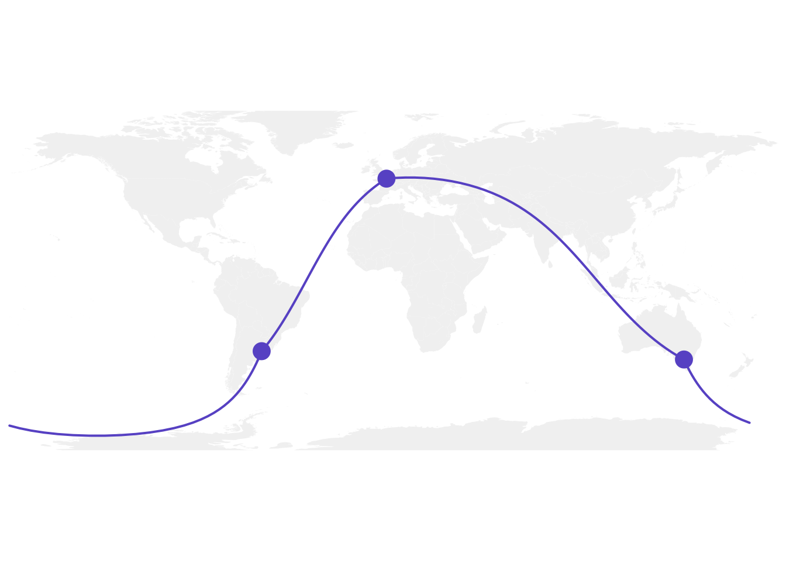
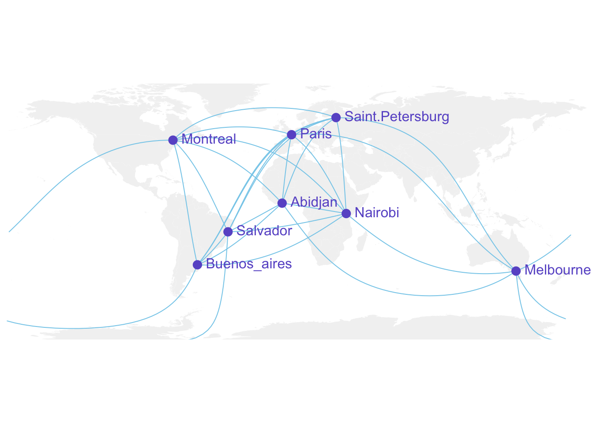
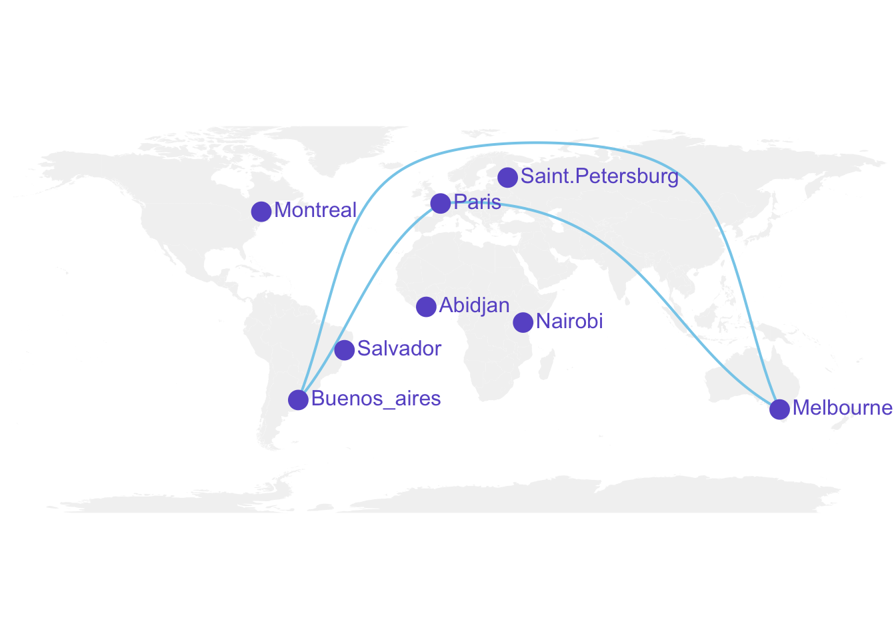

Show/Hide Code
library(dplyr) # 数据处理
library(maps) # 地图绘制
library(geosphere) # 地理计算library(dplyr) # 数据处理
library(maps) # 地图绘制
library(geosphere) # 地理计算# 无边距设置
par(mar=c(0,0,0,0))
# 绘制世界地图
map('world',
col="#f2f2f2", # 陆地颜色：浅灰色
fill=TRUE, # 填充陆地
bg="white", # 背景颜色：白色
lwd=0.05, # 线条宽度
mar=rep(0,4), # 边距设置
border=0, # 边框设置
ylim=c(-80,80) # 纬度范围限制
)使用points()函数在特定位置添加圆圈相对简单。最困难的部分可能是找出您感兴趣的城市的经度和纬度。
# 定义城市坐标（经度，纬度）
Buenos_aires <- c(-58,-34) # 布宜诺斯艾利斯
Paris <- c(2,49) # 巴黎
Melbourne <- c(145,-38) # 墨尔本
# 创建数据框
data <- rbind(Buenos_aires, Paris, Melbourne) |>
as.data.frame()
colnames(data) <- c("long","lat") # 设置列名：经度和纬度
# 在地图上显示城市
map('world',
col="#f2f2f2", fill=TRUE, bg="white", lwd=0.05,
mar=rep(0,4),border=0, ylim=c(-80,80)
)
# 添加城市点标记
points(x=data$long, y=data$lat, col="slateblue", cex=3, pch=20)
现在我们可以通过绘制城市间的最短路线来连接城市。这是使用大圆弧完成的，比使用直线提供更好的可视化效果。
geosphere 包提供了 gcIntermediate() 函数来计算路径。然后可以使用 lines() 函数绘制此路径。
# 背景地图
map('world',
col="#f2f2f2", fill=TRUE, bg="white", lwd=0.05,
mar=rep(0,4),border=0, ylim=c(-80,80)
)
# 城市点标记
points(x=data$long, y=data$lat, col="slateblue", cex=3, pch=20)
# 计算布宜诺斯艾利斯和巴黎之间的连接
inter <- gcIntermediate(
Paris, Buenos_aires,
n=50, # 路径上的点数
addStartEnd=TRUE, # 包含起点和终点
breakAtDateLine=F # 不在日期变更线处断开
)
# 显示这个连接
lines(inter, col="slateblue", lwd=2)
# 巴黎和墨尔本之间的连接
inter <- gcIntermediate(Melbourne, Paris, n=50, addStartEnd=TRUE, breakAtDateLine=F)
lines(inter, col="slateblue", lwd=2)在墨尔本和布宜诺斯艾利斯之间使用完全相同的方法, 结果不太好
会出现一条长水平线，而我们期望连接在地球的另一侧完成（因此不可见）。
原因是 gcintermediate 遵循最短路径，这意味着它将从澳大利亚向东行进直到日期线，断开线条并从太平洋向东返回到南美洲。
因为我们不想看到水平线，我们需要分两步绘制此连接。
为此，我们可以使用以下函数，当两点之间的距离超过180度时，该函数将线条分为两部分：
# 绘制连接的函数
plot_my_connection=function( dep_lon, dep_lat, arr_lon, arr_lat, ...){
# 计算两点间的大圆弧路径
inter <- gcIntermediate(c(dep_lon, dep_lat), c(arr_lon, arr_lat),
n=50, addStartEnd=TRUE, breakAtDateLine=F)
inter=data.frame(inter)
# 计算经度差异
diff_of_lon=abs(dep_lon) + abs(arr_lon)
# 如果经度差异大于180度，分两段绘制以避免跨越地图边界的直线
if(diff_of_lon > 180){
lines(subset(inter, lon>=0), ...) # 绘制东半球部分
lines(subset(inter, lon<0), ...) # 绘制西半球部分
}else{
lines(inter, ...) # 正常绘制整条线
}
}让我们应用这个函数来绘制墨尔本和布宜诺斯艾利斯之间的链接。
好多啦!
# 背景地图
map('world',col="#f2f2f2", fill=TRUE, bg="white", lwd=0.05,mar=rep(0,4),border=0, ylim=c(-80,80) )
# 城市圆圈标记
points(x=data$long, y=data$lat, col="slateblue", cex=3, pch=20)
# 绘制连接线
plot_my_connection(Paris[1], Paris[2], Melbourne[1], Melbourne[2], col="slateblue", lwd=2)
plot_my_connection(Buenos_aires[1], Buenos_aires[2], Melbourne[1], Melbourne[2], col="slateblue", lwd=2)
plot_my_connection(Buenos_aires[1], Buenos_aires[2], Paris[1], Paris[2], col="slateblue", lwd=2)
如果我们想绘制许多连接，完全可以构建一个for循环来逐一绘制它们。
此外，请注意使用text函数添加城市名称。
# 创建扩展数据集，包含更多城市
data <- rbind(
Buenos_aires=c(-58,-34), # 布宜诺斯艾利斯
Paris=c(2,49), # 巴黎
Melbourne=c(145,-38), # 墨尔本
Saint.Petersburg=c(30.32, 59.93), # 圣彼得堡
Abidjan=c(-4.03, 5.33), # 阿比让
Montreal=c(-73.57, 45.52), # 蒙特利尔
Nairobi=c(36.82, -1.29), # 内罗毕
Salvador=c(-38.5, -12.97) # 萨尔瓦多
) |> as.data.frame() # 使用新管道操作符
colnames(data)=c("long","lat")
# 生成所有城市对的坐标组合
all_pairs <- cbind(t(combn(data$long, 2)), t(combn(data$lat, 2))) |> as.data.frame()
colnames(all_pairs) <- c("long1","long2","lat1","lat2")
# 背景地图
par(mar=c(0,0,0,0))
map('world',col="#f2f2f2", fill=TRUE, bg="white", lwd=0.05,mar=rep(0,4),border=0, ylim=c(-80,80) )
# 添加所有连接线：
# 遍历所有城市对，绘制它们之间的连接
for(i in 1:nrow(all_pairs)){
plot_my_connection(all_pairs$long1[i], all_pairs$lat1[i],
all_pairs$long2[i], all_pairs$lat2[i],
col="skyblue", lwd=1)
}
# 添加城市点和名称
points(x=data$long, y=data$lat, col="slateblue", cex=2, pch=20)
text(rownames(data), x=data$long, y=data$lat, col="slateblue", cex=1, pos=4)
这是Simply Statistics博客建议的绘制Twitter连接地图的方法。
思路是计算整个大圆弧，并只保留停留在地图前面的部分，永远不会到背面。
# Jeff Leek提出的保留大圆弧正确部分的函数：
getGreatCircle <- function(userLL,relationLL){
# 计算完整的大圆弧路径（200个点）
tmpCircle = greatCircle(userLL,relationLL, n=200)
# 找到起点在大圆弧中的位置
start = which.min(abs(tmpCircle[,1] - data.frame(userLL)[1,1]))
# 找到终点在大圆弧中的位置
end = which.min(abs(tmpCircle[,1] - relationLL[1]))
# 提取起点到终点之间的路径部分
greatC = tmpCircle[start:end,]
return(greatC)
}
# 背景地图
map('world',col="#f2f2f2", fill=TRUE, bg="white", lwd=0.05,mar=rep(0,4),border=0, ylim=c(-80,80) )
# 绘制3个连接：
great <- getGreatCircle(Paris, Melbourne)
lines(great, col="skyblue", lwd=2)
great <- getGreatCircle(Buenos_aires, Melbourne)
lines(great, col="skyblue", lwd=2)
great <- getGreatCircle(Paris, Buenos_aires)
lines(great, col="skyblue", lwd=2)
# 城市名称和点标记
points(x=data$long, y=data$lat, col="slateblue", cex=3, pch=20)
text(rownames(data), x=data$long, y=data$lat, col="slateblue", cex=1, pos=4)